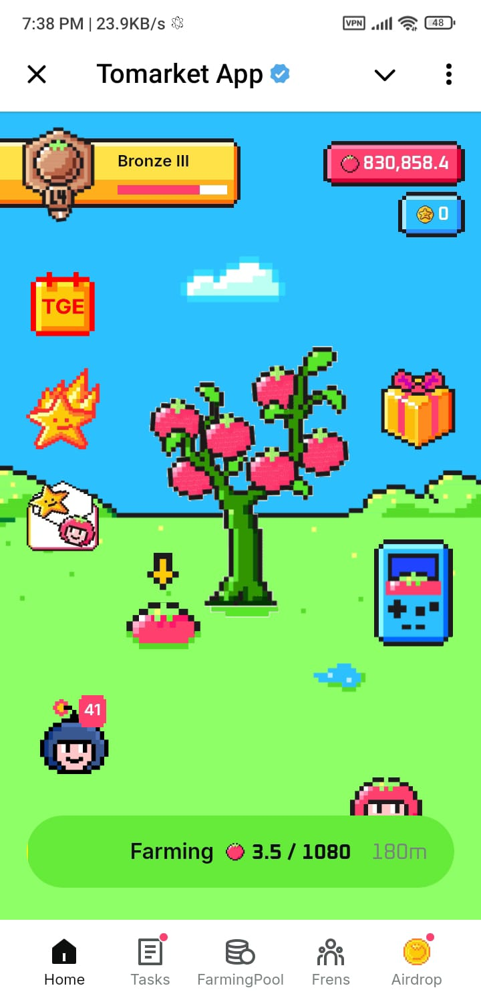

Tomato is a popular mining platform on Telegram where a large number of users are engaged in mining activities. It is set to be listed on major exchanges, including Binance and OKX, on October 31st. Mining on Tomato is straightforward; users can earn a significant amount of coins by inviting friends. Additionally, users receive 1080 coins every few hours. To claim these coins, simply press the "mine" button every three hours. After mining is complete, a "claim" button will appear. Clicking on this button will add 1080 coins to your account. After that, press the mine button again and wait for the next three hours to continue earning.
Initially, very few people worked on Tomato, but the user base grew rapidly over time. However, many users became disheartened due to a lack of updates regarding when the coins would be listed. As soon as the announcement was made that the coin would be listed on October 31st, many users who had previously stopped mining resumed their activities.
July 2024